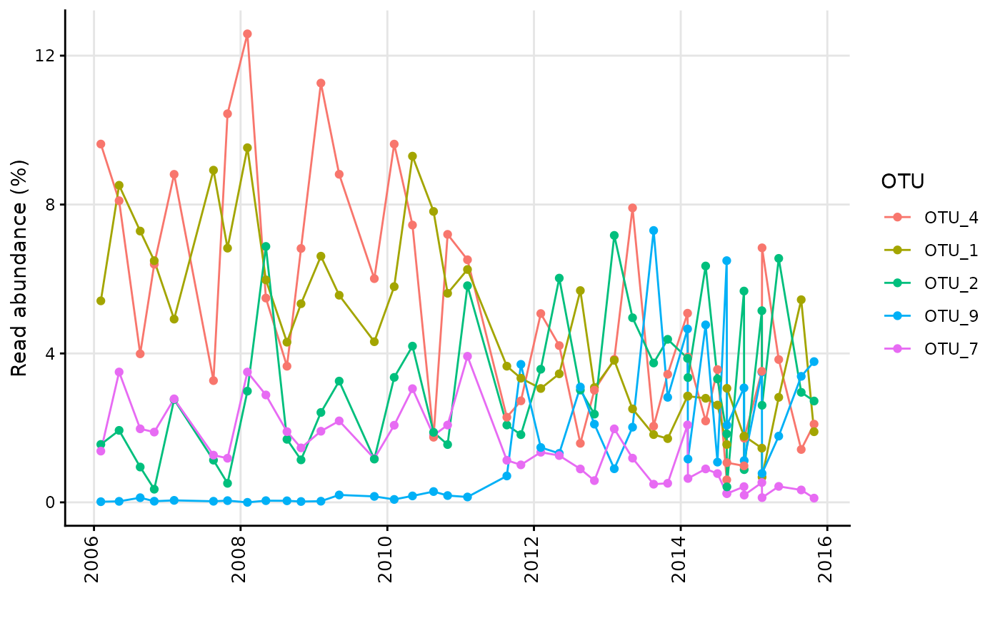
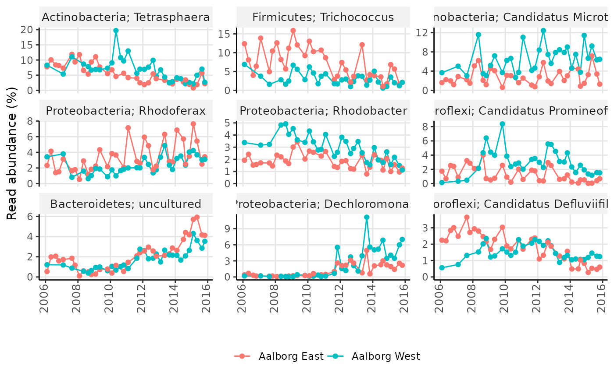

Generates a timeseries plot showing relative read abundances over time.
amp_timeseries( data, time_variable = NULL, group_by = NULL, tax_aggregate = "OTU", tax_add = NULL, tax_show = 5, tax_class = NULL, tax_empty = "best", split = FALSE, scales = "free_y", normalise = TRUE, plotly = FALSE, ... )
| data | (required) Data list as loaded with |
|---|---|
| time_variable | (required) The name of the column in the metadata containing the time variables, e.g. |
| group_by | Group the samples by a variable in the metadata. |
| tax_aggregate | The taxonomic level to aggregate the OTUs. (default: |
| tax_add | Additional taxonomic level(s) to display, e.g. |
| tax_show | The number of taxa to show, or a vector of taxa names. (default: |
| tax_class | Converts a specific phylum to class level instead, e.g. |
| tax_empty | How to show OTUs without taxonomic information. One of the following:
|
| split | Split the plot into subplots of each taxa. (default: |
| scales | If |
| normalise | (logical) Transform the OTU read counts to be in percent per sample. (default: |
| plotly | (logical) Returns an interactive plot instead. (default: |
| ... | Additional arguments passed to |
A ggplot2 object.
See ?amp_subset_samples or the ampvis2 FAQ.
Julie Klessner Thun Pedersen julieklessnerthun@gmail.com
Kasper Skytte Andersen ksa@bio.aau.dk
# Load example data data("AalborgWWTPs") # Timeseries of the 5 most abundant OTUs based on the "Date" column amp_timeseries(AalborgWWTPs, time_variable = "Date", tax_aggregate = "OTU" )#> #>#> #> #>#> Warning: Duplicate dates in column Date, displaying the average for each date. #> Consider grouping dates using the group_by argument or subset the data using amp_subset_samples.#> Warning: `group_by_()` was deprecated in dplyr 0.7.0. #> Please use `group_by()` instead. #> See vignette('programming') for more help# As the above warning suggests, there are more than one sample per date in the data, # in this case one from Aalborg East and one from Aalborg West. The average of the # two samples is then shown per date. In such case it is then recommended to either # subset the data, or group the samples by setting group_by = "" and split by tax_aggregate # by setting split = TRUE: amp_timeseries(AalborgWWTPs, time_variable = "Date", group_by = "Plant", split = TRUE, scales = "free_y", tax_show = 9, tax_aggregate = "Genus", tax_add = "Phylum" )